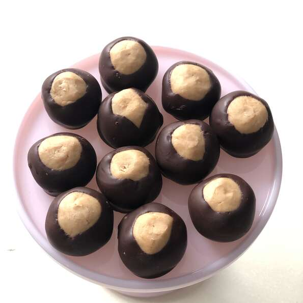

Description
The best buckeye balls you've ever seen!
Ingredients
- 1 1/2 cups creamy peanut butter/li>
- 1/2 cup butter, softened
- 1 teaspoons vanilla extract
- 4 cups sifted confectioners' sugar
- 6 ounces semi-sweet chocolate chips
- 2 tablespoons shortening
Steps
- Line a baking sheet with waxed paper; set aside.
- In a medium bowl, mix peanut butter, butter, vanilla, and confectioners' sugar with hands to form a smooth stiff dough. Shape into balls using 2 teaspoons of dough for each ball. Place on prepared pan, and refrigerate.
- Melt shortening and chocolate together in a metal bowl over a pan of lightly simmering water. Stir occasionally until smooth, and remove from heat.
- Remove balls from refrigerator. Insert a wooden toothpick into a ball, and dip into melted chocolate. Return to wax paper, chocolate side down, and remove toothpick. Repeat with remaining balls. Refrigerate for 30 minutes to set.
Index